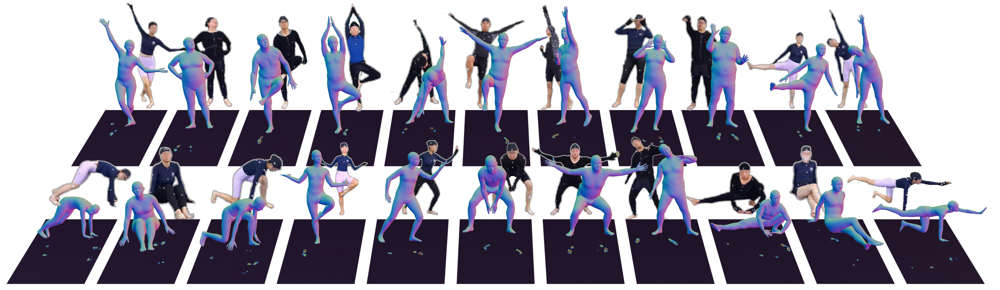

Humanoid motion imitation requires not only accurate perception of human kinematics but also faithful reproduction of physical interactions with the environment. However, existing pipelines rely primarily on vision-based motion capture and kinematic imitation, largely ignoring contact dynamics, leading to artifacts such as foot sliding, penetration, and unstable behaviors.
In this work, we revisit humanoid motion imitation from the perspective of physical grounding and leverage pressure as a unified modality across perception and control. We present PressMimic, a framework that integrates pressure into the full pipeline from motion capture to humanoid control. In the perception stage, we introduce FRAPPE++, a multimodal model that fuses RGB and pressure to jointly estimate 3D pose and global motion, where pressure provides explicit contact and support constraints to resolve ambiguity in vision-based estimation. In the control stage, we propose a pressure-supervised policy (PSP) that incorporates pressure-derived signals into reinforcement learning, enabling physically consistent contact patterns during execution.
We further construct MotionPRO, a large-scale dataset with synchronized RGB, pressure, and motion capture data. Experiments show that pressure improves motion estimation accuracy, trajectory consistency, and execution stability. These results demonstrate that pressure serves as an effective physical grounding signal, bridging perception and control for physically consistent humanoid motion imitation.
FRAPPE++ fuses RGB video with pressure maps to jointly estimate 3D pose and global motion trajectory. Both modalities are non-invasive, yet capture complementary aspects of human motion: RGB encodes visual appearance and geometric structure, while pressure provides explicit contact states and ground reaction dynamics imperceptible to cameras alone. We impose orthographic similarity constraints along the camera axis and whole-body contact constraints along the vertical axis, combining precise lower-body contact cues from pressure with accurate full-body pose from RGB.
The Pressure-Supervised motion control Policy (PSP) incorporates plantar pressure maps as distributional offsets characterizing foot contact patterns, used as an auxiliary reward term during reinforcement learning. This explicitly encourages the humanoid robot to reproduce the ground reaction dynamics of the human demonstrator, resulting in more stable locomotion and improved task success rates.
MotionPRO is a large-scale dataset capturing synchronized pressure, RGB video, and optical motion capture signals from 70 volunteers performing 400 motion types, encompassing 12.4M pose frames in total. It supports both stages of our pipeline and enables comprehensive evaluation of multimodal human motion understanding.

@article{lu2026pressmimic,
author = {Lu, Yi and Ren, Shenghao and Xiong, Tianyu and Li, Zhaoxiang and Li, Jiaqi and Zhang, He and Yu, Tao and Shen, Qiu and Cao, Xun},
title = {PressMimic: Pressure-Guided Motion Capture and Control for Humanoid Robot Imitation},
journal = {IEEE Transactions on Pattern Analysis and Machine Intelligence},
year = {2026},
}